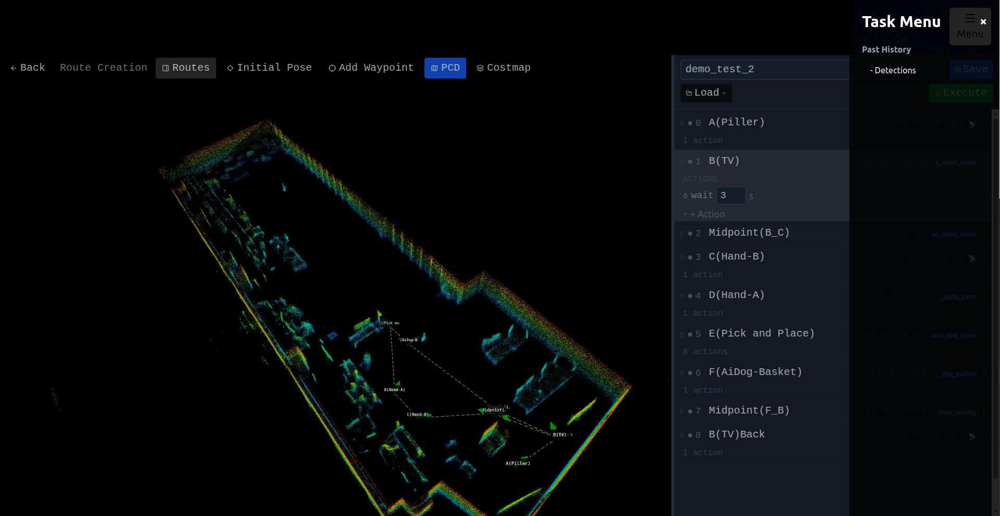
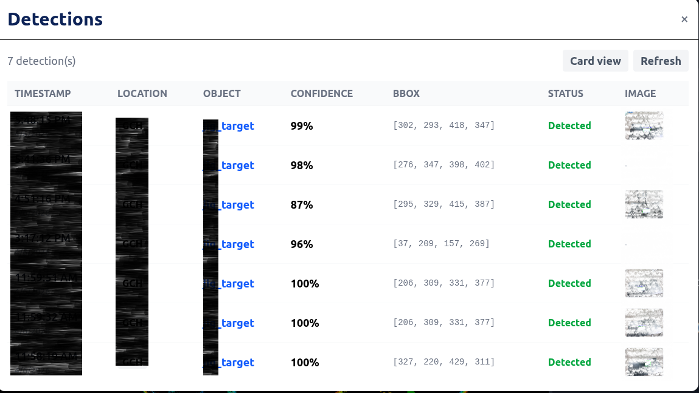

In Part 1 I covered the foundation: a web UI showing live costmaps, point clouds, and a 2D goal navigation flow for a Unitree G1 humanoid. That works great for one-off "go here" commands. But real robot work isn't single goals — it's sequences. "Walk to position A. Stand up. Play an audio greeting. Walk to position B. Dock to an AprilTag. Pick up the box. Move to position C. Put it down."
That's a route with actions. This is the part where the system turns from a remote-control toy into something that can actually run a demo on its own.
Like Part 1, everything in this post is built from scratch — the route editor UI, the waypoint state management, the action library on the robot, the WebSocket protocol that ties it all together, even the Detectron2 inference and detection persistence pipeline. No off-the-shelf "robot mission planner" was harmed in the making of this blog.
Why routes?
Click-to-navigate is fantastic for tele-op. But the moment you have a multi-step demo — say, an inspection round where the robot stops at five points, scans something at each, and reports back — you can't be the one clicking. You need to define the route once and run it later.
I needed:
- A way to place waypoints by clicking on the map
- A way to attach actions to each waypoint (audio, body movements, manipulation)
- A way to save and reload routes from the backend
- A way to execute routes and watch progress in real time
- Recovery options when something fails (because something always fails)
The Route Creation page

Route editor — 3D scene on the left, waypoint side panel on the right, route polyline in yellow
This is the route editor. You can see:
- The 3D scene on the left — same Three.js viewer as Part 1, with the costmap, point cloud overlay, and waypoint markers (green arrows with labels)
- The yellow dashed line — the route polyline connecting waypoints in execution order
- The side panel on the right — an editable list of waypoints, each expandable to show its actions
- The bottom toolbar — Save / Load / Execute / Stop / Pause buttons
To place a waypoint: enable the Add Waypoint tool, click on the map where you want it, drag to set the heading, release. To reposition: with no tool active, left-click drag the marker. To rotate: right-click drag. To reorder: drag the rows in the side panel. Delete: trash icon per row.
Routes are persisted as JSON in the backend (scans/<map>/routes/<name>.json). The schema went through a refactor recently — it's now segment-based to support an external orchestrator API, but old waypoint-flat routes auto-migrate at load time so nothing breaks.
The action library
Each waypoint has a list of actions that run after the robot arrives. The action library covers the basic categories you need to script a real demo:
- Timing — simple pauses for N seconds (the most-used action, by a wide margin)
- Movement — closed-loop forward/backward translation by an exact distance, closed-loop rotation by an exact angle, plus open-loop duration-based fallbacks for when localization gets flaky
- Body posture — enter walk-ready state, sit/park, via the standard
LocoClientcalls in the SDK - Audio — stream an audio file through the onboard speaker via the SDK's audio client
- Manipulation — vision-guided pick-and-place using a depth camera, plus AprilTag-based docking that aligns yaw and approaches a fixed offset
Every one of these sits behind a clean async API on the robot — handwritten glue between ROS topics and the unitree_sdk2py SDK.
The frontend doesn't need to know how any of them work. It just sends a JSON action dict over WebSocket and the executor on the robot picks it up and runs it.
Live execution
Here's a full waypoint route in action:
Creating a 3-waypoint route, attaching actions, and executing it end to end
What's happening in the video:
- I create 3 waypoints by clicking on the map and dragging for orientation
- For each waypoint, I attach an action — in this demo, simple
waitand movement actions to keep things visible - I link the route to the backend execution API (the route is sent over WebSocket as a
route_startmessage with all segments + initial pose) - I hit Execute — the robot starts navigating to the first waypoint via move_base
- The side panel shows live progress — a yellow pulsing dot on the active waypoint, green dots on completed ones, gray on pending
- At each waypoint the robot stops, runs its actions, then continues to the next
- When all 3 are done the panel shows "Route completed"
The progress feedback comes from the executor on the robot sending progress messages back through the WebSocket relay every time the phase changes (navigating / action / pre_action / post_action).
Robustness — because navigation fails
You can't ship a robot demo where one failed waypoint kills the entire route. move_base aborts goals all the time — wheels slip, costmaps update, the robot oscillates. So I added a recovery layer:
Pause / Resume
At any point during execution, hit Pause. The current move_base goal is cancelled, the robot stops, and the executor blocks. Hit Resume and it re-issues the same goal and keeps going. The state survives — your route doesn't reset.
Retry / Skip
When move_base returns ABORTED for a waypoint, instead of failing the whole route, the executor sends a route_paused message with the failed waypoint index. The UI shows an amber pulsing dot on that waypoint, and below the row two buttons appear: Retry (re-issue the goal — useful when the obstacle has moved) and Skip (mark this waypoint as done and move to the next one — useful when the goal is genuinely unreachable).
Stop
The big red button. Cancels everything, stops the robot, drops the WebSocket. Use when something is wrong and you don't want to debug right now.
All of this is wired up via three additional WebSocket message types: route_pause, route_resume, route_retry, route_skip. Each maps to an asyncio.Event in the executor that the navigation loop polls between move_base goal attempts.
Object detection — Detectron2 in the loop
When the pick action runs, the executor needs to know where the object actually is. The only sensor that knows is the RealSense camera on the robot's head, and the only way to find a specific object in an RGB image is a vision model.
I integrated Detectron2 running directly on the Jetson with a custom-trained model. The flow is the standard "RGB-D object pick" recipe:
- Grab the latest frame from
/camera/color/image_raw - Run Detectron2 inference and pick the target detection
- Look up depth inside the bounding box from
/camera/aligned_depth_to_color/image_rawand deproject the bbox center into a 3D point in the camera frame - Apply the head-tilt rotation to convert into the robot's body frame
- Hand the 3D point off to the arm controller for the actual grasp
But the more interesting bit (for a blog post anyway) is: how does the operator see what the robot detected?
I added two new ROS topics published by the vision controller after every detection:
/detection_image/compressed— the annotated camera frame with bounding boxes drawn (JPEG)/detection_result— a JSON string with{timestamp, status, location, objects: [{class_name, confidence, bbox}]}
A background WebSocket listener in the React app subscribes to both, POSTs each detection to the backend, and the backend persists them to detections/ (one .json + one .jpg per detection). They survive restarts.
In the UI, click the side menu (top right) → Detections:

Side menu — Detection panel is one click away from any view
You get a panel with the full detection history.

Detection card view — every past detection with its annotated image, class, confidence, and location
Each card shows:
- The annotated image with bounding boxes
- Class name and confidence percentage
- Bounding box coordinates
- Status (Detected / None)
- Location identifier (configurable per deployment)
- Timestamp
Switch to table view if you want a denser layout. Click any thumbnail for a full-size modal.
The whole thing is opt-in observability — the detection panel doesn't have to be open for detections to be saved. The background listener catches every detection regardless.
What's next
I'm working on multi-robot orchestration. Right now each segment in a route is gated locally by the executor. But in a multi-robot setup, you want a central scheduler that says "OK, your turn, do segment 3 now." That's the external-orchestrator integration — each segment can have an optional trigger field that tells the backend to wait until an external scheduler publishes a matching step before executing. The backend polls the scheduler, releases segments as their triggers fire, and reports completions back so the scheduler can advance.
That's already implemented but not yet wired to a real multi-robot deployment — I'll write a follow-up once it's running end-to-end.
Closing
This whole project — the React + Three.js UI, the FastAPI backend, the FAST-LIO localization tuning, the move_base configuration, the Unitree SDK action library, the Detectron2 inference pipeline, the WebSocket relay, the route schema, the orchestrator integration — was built from scratch. Every layer.
If you're a robotics person who's been thinking "I wish I had a real web UI for my robot but it sounds like too much work" — it's not impossible. It's just a lot of small problems stacked on top of each other. Pick the layer that scares you most, build it first, and the rest follows.
If you missed it, Part 1 covers the foundation: the localization stack, the live visualization, and the click-to-go navigation flow. Part 3 goes inside the robot — FAST-LIO, move_base, and the action controllers.
Built on a Unitree G1 humanoid with a Livox MID360 LiDAR and a Jetson Orin. UI in React 19 + TypeScript + Three.js, backend in FastAPI, robot side in Python with unitree_sdk2py and a fair bit of hand-tuning of FAST-LIO and move_base.